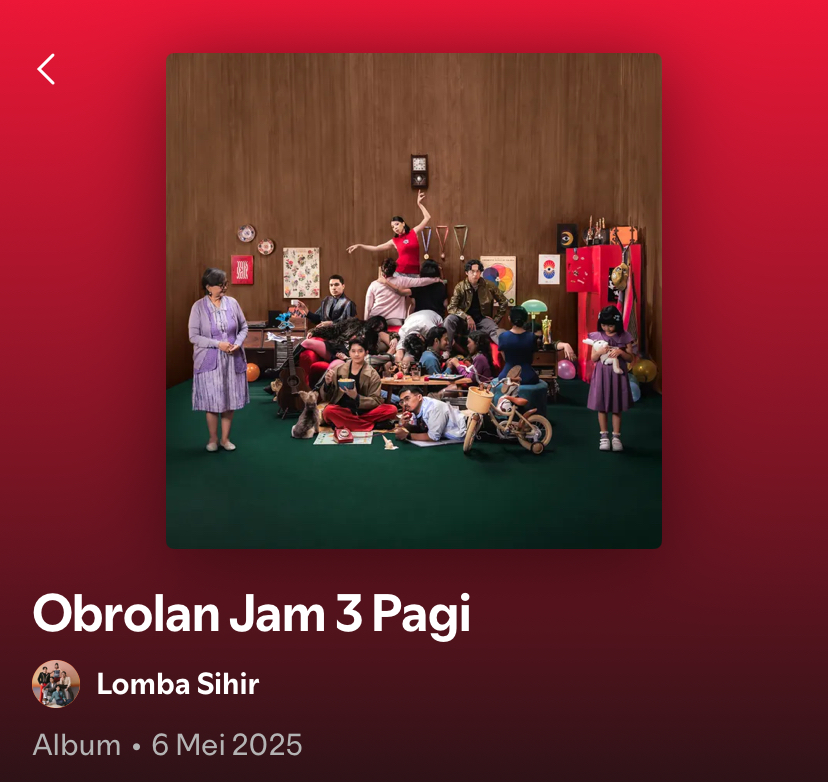

Why 2 AM?
An introduction to this little corner of mine. A thought about the hours between midnight and morning, and the people living through them.
READ ARTICLE →A COLLECTION OF THOUGHTS
Little thoughts, stories, discoveries, and things worth keeping. Written somewhere between awake and asleep.

An introduction to this little corner of mine. A thought about the hours between midnight and morning, and the people living through them.
READ ARTICLE →